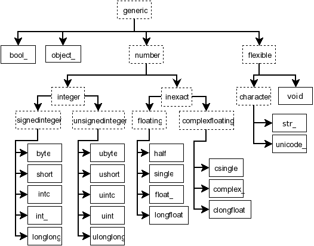

NumPy is a library for the Python programming language, adding support for large, multi-dimensional arrays and matrices, along with a large collection of high-level mathematical functions to operate on these arrays.
多维数组 ndarray
NumPy 主要由多维数组 ndarray (一个用来储存同一种数据类型的有序容器), 和用来操纵 ndarry 的函数组成. ndarray 是 NumPy 核心概念
ndarray 中的元素的可以是整数, 浮点数, 固定长度的字符串, 等等, 还可以是任何 Python 对象的 reference (并不储存对象本身) 这些元素称为标量 scalar
ndarrays 是同质的：即其所有元素在内存中占据了同样的大小，每一个元素的数据类型对象dtype是一样的
ndarray 中的元素可以用整数(位置)来索引，这和 list 很像, 但 ndarray 可以是多维的 (有多个轴 axis)
一个 ndarray 在计算机内存中由两个部分组成：
组成了
ndarray的scalarndarray的头文件, 定义了数组中scalar唯一的数据类型
数据类型
ndarray 中的元素的可以是整数，浮点数，字符串，等等，还可以是任何 Python 对象的 reference (并不储存对象本身)。与数组对应，这些元素统称为标量 scalar
以下是这些标量的数据类型对象之间的继承关系：

对象类型 np.object_
object_: 任何Python对象的reference，而非对象本身。但是在使用时会返回这个对象本身
数字类型 np.number
bool_: 布尔型数据类型（True 或者 False）int_: 默认的整数类型（类似于 C 语言中的long，int32或int64）intc: 与 C 的int类型一样，一般是int32或int64intp: 用于索引的整数类型（类似于 C 的ssize_t，一般情况下仍然是int32或int64）int8: 字节（-128 to 127）int16: 整数（-32768 to 32767）int32: 整数（-2147483648 to 2147483647）int64: 整数（-9223372036854775808 to 9223372036854775807）uint8: 无符号整数（0 to 255）uint16: 无符号整数（0 to 65535）uint32: 无符号整数（0 to 4294967295）uint64: 无符号整数（0 to 18446744073709551615）float_:float64类型的简写float16: 半精度浮点数，包括：1 个符号位，5 个指数位，10 个尾数位float32: 单精度浮点数，包括：1 个符号位，8 个指数位，23 个尾数位float64: 双精度浮点数，包括：1 个符号位，11 个指数位，52 个尾数位complex_:complex128类型的简写，即 128 位复数complex64: 复数，表示双 32 位浮点数（实数部分和虚数部分）complex128: 复数，表示双 64 位浮点数（实数部分和虚数部分）
字符类型 np.character
str_: 字符串unicode_:unicode字符串，默认是UTF8，支持中文
它们的方法和属性与 Python 原生的 str 一致
有些标量的数据类型对象 dtype 与 Python 中的基本数据类型对象 int, float, str, bool 概念上是一样的，两者也可以很容易地互相转换和比较数值大小，但是他们是不同的对象
索引与切片
numpy 保留了 Python 中索引与切片的操作，并且可以针对多维数组
索引会返回一个 scalar，切片会返回一个 ndarray
多维索引
不同维度之间用“,”隔开。

更新 ndarray
只需对该 ndarray 做索引，并对结果“赋值”。可以使用一个 scalar 更新，也可以使用另一个 ndarray 更新，但需要注意 shape 和 dtype 是否匹配
索引进阶
整数数组索引
使用一个整数数组（list, tuple 或 ndarray）来切割

条件索引
使用逻辑表达式来筛选数组中的元素
1 | import numpy as np |
一些条件筛选函数
np.argmax(),np.argmin(): 返回沿给定轴最大和最小元素的索引np.nonzero(): 返回输入数组中非零元素的索引np.where(): 返回输入数组中满足给定条件的元素的索引np.extract(): 根据某个条件从数组中抽取元素，返回满条件的元素
数组的维度与轴 Axis
ndarray 的维度 ndim 即指明了其轴的数量。0 轴定义为“最里面”的那个一维数组。
改变 ndarray 的形状
通过 .reshape() 方法可以改变数组的形状。
加轴
np.newaxis : 在使用这句话的位置增加一条轴
1 | import numpy as np |
广播
当运算中的 2 个数组的形状不同时，numpy 将自动触发广播机制
广播的规则：
输出数组的形状是输入数组形状的各个维度上的最大值
输入数组的每个轴和输出数组的对应轴的长度相同, 或者该轴长度为 1
输入数组若维度低于输出数组，那么在该数组的形状前加1直至补齐
输入数组若某轴的长度为1，则沿着此轴运算时都用此轴上的第一组值
随机数
np.random.rand(d0, d1, d2): 从uniform分布中抽出形状为(d0, d1, d2)的样本数组，形状为空则返回标量np.random.randn(d0, d1, d2): 从标准正态分布中抽出形状为(d0, d1, d2)的样本数组，形状为空则返回标量np.random.RandomState(): 固定随机状态允许我们复现某一次随机过程的结果。实例化一个RandomState对象, 此后我们可以用这个对象替代np.random来调用np.random下的函数, 比如np.random.rand
常用方法
np.unique(): 不重复元素np.sort(): 排序np.argsort(): 按照元素值的大小将索引排序np.bincount(): 自然数数组中各元素的频次.T: 转置np.linalg.inv(): 求逆矩阵，np.linalg.pinv()是求伪逆